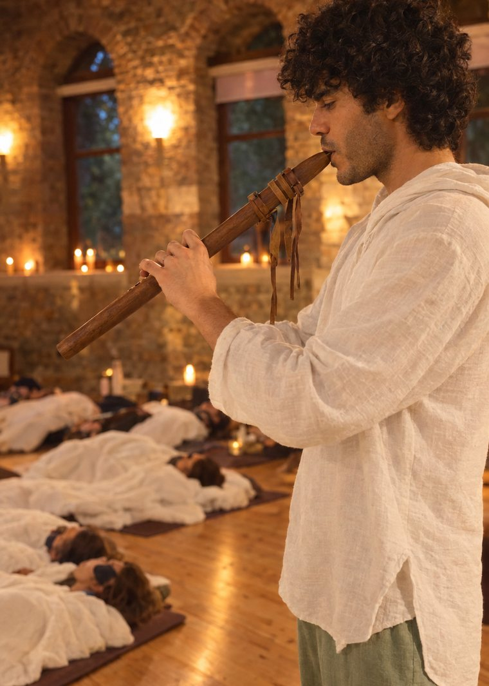

Grup SeansıGroup Session
Stüdyo ve salonlarda, küçük ya da kalabalık gruplarla canlı bir ses deneyimi.A live sound experience in studios and halls, for small or large groups.
Titreşimsel Yolculuk · KanunlaSound Healing · with Qanun
Uzanırsın, gözlerini kaparsın. Kanunun telleri, gong ve kâselerle birlikte bir süre sesin içinde kalırsın.You lie down and close your eyes. For a while you stay inside the sound of the qanun, gong and bowls.

NedirWhat it is
Titreşimsel yolculuk, uzanarak dinlenen bir ses deneyimi. Merkezde kanun var: makamdan doğan doğaçlama ezgiler, uzun tınlayan teller ve aralarındaki sessizlikler.
A sound journey is a listening experience you receive lying down. At its centre is the qanun: improvised melodies born from makam, long ringing strings and the silences between them.
Kanuna gong, kristal ve metal kâseler, flüt ve ses eşlik eder. Müzik önceden yazılmaz; odadaki nefese ve sessizliğe göre o an şekillenir.
Gong, crystal and metal bowls, flute and voice accompany the qanun. Nothing is composed in advance; the music takes shape in the moment, following the breath and the silence in the room.
Senden bir şey yapman beklenmez. Uzanır, dinler ve sesin bedende nasıl yankılandığını fark edersin.
Nothing is asked of you. You lie down, listen and notice how the sound resonates in the body.
AkışThe journey
FormatlarFormats
Stüdyo ve salonlarda, küçük ya da kalabalık gruplarla canlı bir ses deneyimi.A live sound experience in studios and halls, for small or large groups.
Bir kişi ya da küçük bir grup için, daha yakın ve sakin bir oturum.A closer, quieter session for one person or a small circle.
İnziva kapanışları, yoga dersi sonları ve festival programları için. Yoga ve aile dizilimiyle birlikte de kurulabilir.For retreat closings, the end of a yoga class or festival programmes. Can also be combined with yoga and family constellations.
Bilmen gerekenlerGood to know
Bu çalışma tıbbi bir tedavinin yerini tutmaz. Sağlık durumunla ilgili bir soru varsa öncesinde konuşalım.This work is not a substitute for medical treatment. If you have a health concern, let's talk about it beforehand.
Diğer çalışmalarOther work
Kanun, makam müziği ve elektronik prodüksiyon. Konser, festival ve seremoni setleri.Qanun, makam music and electronic production. Concert, festival and ceremony sets.
Sayfaya git →Visit page →Grup ve özel dersler, hareket çalışmaları. Ders sonunda kanunla dinlenme.Group and private classes and movement work, closing with a rest to qanun.
Sayfaya git →Visit page →Kuşaklar boyunca aktarılana, söylenemeyene ve yarım kalan vedalara birlikte, şefkatle bakarız.Together and with compassion, we look at what was passed down through generations, what could not be said and the farewells left unfinished.
Sayfaya git →Visit page →Sıcak suda, desteklenerek yapılan birebir bir çalışma.A one-to-one session in warm water, held and supported.
Sayfaya git →Visit page →İletişimContact
Konser, ders, atölye, inziva ve seremoni davetleri için yaz. Türkçe ve İngilizce.For concerts, classes, workshops, retreats and ceremonies. Turkish and English.
baran.eskili@gmail.com